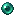
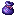
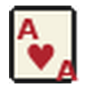

Portal, Wiki viva, Custom Item Registry, BlueMap y telemetría preparados para utilizar los recursos visuales reales de Obsidian Server.
ENTRAR AL PORTAL →Selección cargada desde tus resource packs.



Primera versión preparada para comenzar a hostear.
Ítems con textura real, lore, valor, crafting y obtención.
Sección preparada para conectar el mapa real.
Inspección de assets por pack, namespace y estado.